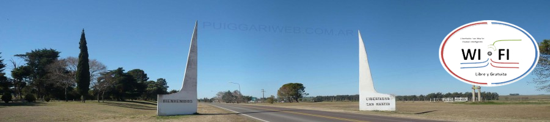
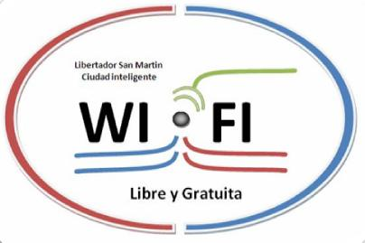
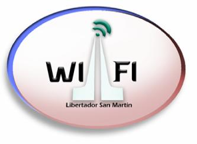
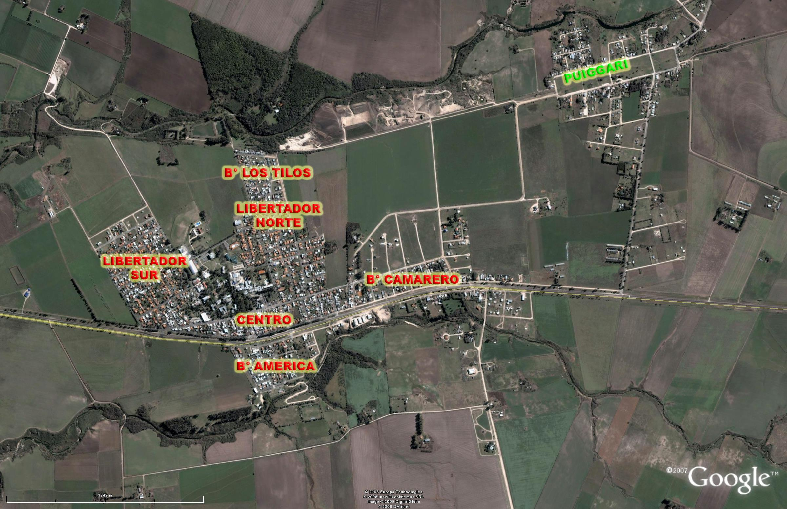
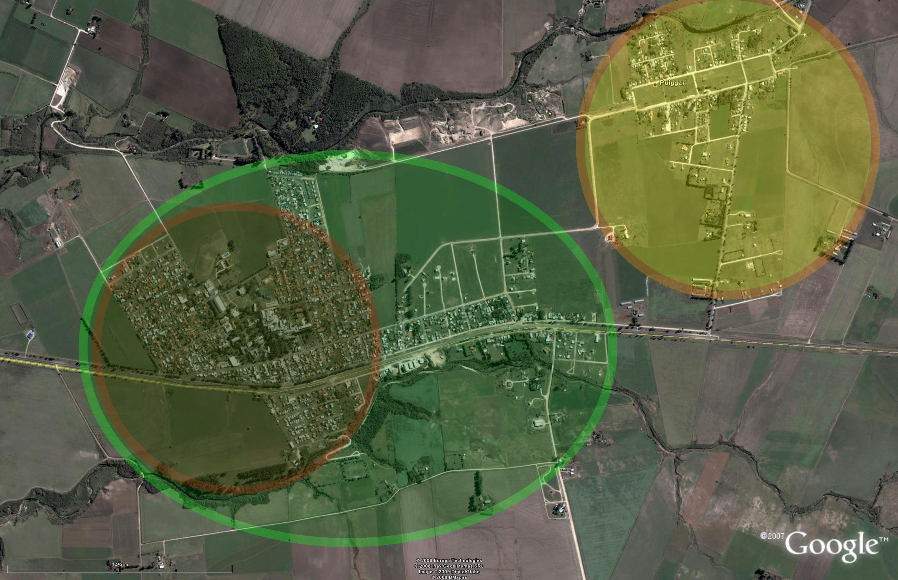
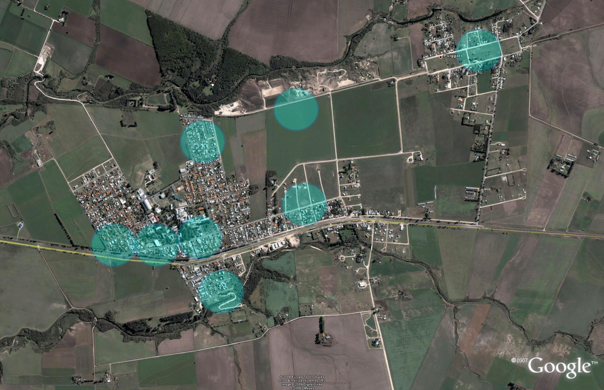
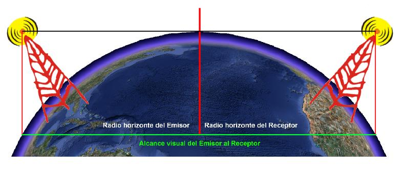
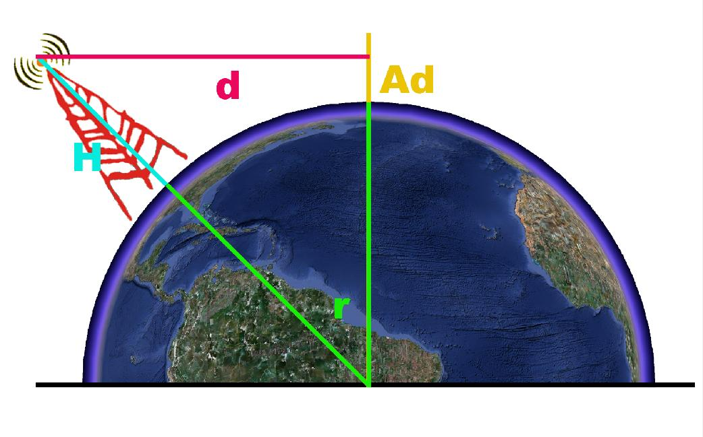
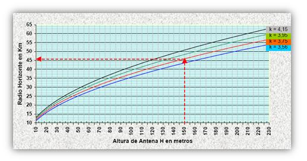
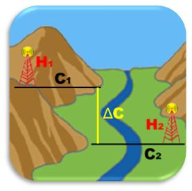

Índice
- PProyectoPresentación, logos y aprobación del proyecto.
- 01IntroducciónJustificación, problema, objetivos, marco teórico, importancia y limitaciones.
- 02Aspectos GeneralesNombre, ubicación, clasificación y objetivos.
- 03Resumen EjecutivoMercado, localización, organización e inversión.
- 04Estudio del MercadoUsos del servicio, encuesta, competencia y tamaño.
- 05Ingeniería del ProyectoRequerimientos técnicos, hardware, software y personal.
- 06Programa de ProducciónRegistro de usuarios, cronograma y etapas por barrios.
- 07AntenasRadioenlaces, alcance visual y radio horizonte.
- 08ResultadosAnálisis de las 161 encuestas.
- 09Conclusiones y RecomendacionesViabilidad y recomendaciones finales.
- AAgradecimientosQuienes ayudaron a hacer el proyecto.
- BBibliografíaFuentes consultadas en 2008 y 2009.
- +¿Quién más escribió?Otras fuentes sobre la ciudad conectada, 1997–2026.


Proyecto
Proyecto presentado en cumplimiento parcial de los requisitos de la materia Seminario de Aplicación Profesional
DECLARACIÓN DE AUTORÍA
Declaro bajo mi responsabilidad haber realizado este proyecto, en cumplimento de los requisitos de la asignatura de Seminario de Aplicación Profesional 2.Hernando A. Gigliotti
Aprobación del Proyecto:
El lunes 3 de agosto de 2009, el proyecto fué aprobado por el el Ing. Claudio Bracalenti (profesor de la materia de Seminario y Aplicación Profesional) y el Ing. Juan Bournissen (director de la Carrera de la Lic. en Sistemas de Información, de la Universidad Adventista del Plata).
Introducción
Justificación del Problema
La creciente demanda de información, la imperiosa necesidad de comunicación, las posibilidades de encontrar y ofrecer trabajo, la amplia red de ubicación territorial, como la abarcante necesidad de información literaria, cultural, económica, sociológica, religiosa espiritual, política, otro, ha llevado al ser humano a refugiarse en internet a través de Computadoras, PDA, smatphones, teléfono, Laptops, entre otros.
Desde principios del presente siglo se considera analfabetos, a los que, aun sabiendo leer y escribir, no poseen los conocimientos de inglés y computación.
La computadora en todas las esferas no solo es imprescindible sino que si esta no se conecta a internet es defectuoso a los fines más necesarios, por lo tanto la computadora misma a dejado de ser un elemento necesario si no se conecta a internet.
La necesidad de internet es en este momento de suma necesidad para todos los quieren estar a la altura de las circunstancia del mundo tecnológico, teniendo así todo al alcance de la mano.
Planteamiento del problema
La problemática en Libertador San Martín se centra en que no todos los habitantes permanentes, los habitantes de transito o los ocasionales tiene o pueden tener acceso a internet, libre y gratuita, por varios motivos.
La creciente demanda de información, comunicación y por otro lado, la pluralidad de economías dispares de los habitantes de Libertador San Martín, deja de manifiesto la necesidad de contar con una ciudad inteligente con igualdad para todos.
Objetivos
1.- Analizar la necesidad de los habitantes permanentes, de los habitantes ocasionales, turistas y pacientes el deseo de tener la posibilidad de conectarse a internet en forma libre y gratuita.
2.- Verificar la posibilidad de establecer cordones WI-FI y transformar a Libertador San Martín en una ciudad inteligente.
3.- Verificar cualitativamente la posibilidad de establecer una red WI-FI.
4.- Proporcionar información después de realizada la investigación pertinente a la municipalidad y la comunidad toda, que permita a quien lo desee poner en marcha tal proyecto.
Marco Teórico
Hay en la actualidad países y ciudades en todo el mundo que cuentan con una red inalámbrica libre y gratuita, Ejemplo de esto son ciudades como Filadelfia, San Francisco, Toronto, Mountain View, entre otras, en nuestro país la provincia de San Luis, La ciudad Autónoma de Buenos Aires, y el partido de la costa, provincia de Buenos Aires.
En nuestro país hay proyectos como la provincia de San Luis, la municipalidad de Tigre, el partido de la costa en Buenos Aires (la costa atlántica) y la ciudad de Buenos Aires, que aunque estos proyectos no están terminados, ya se deja ver en algunos lugares como los mencionados, la posibilidad cierta de ingresar a internet a través de este medio.
Importancia del estudio
En la ciudad de Libertador San Martín, por las características propias del lugar, se hace cada vez más necesario la comunicación, la obtención de información etc.
El proyecto arrojará datos que pueden ser orientadores en la elaboración de un plan de estudio y de implementación de este mismo proyecto en la instalación de internet libre y gratuito para todos.
Limitaciones y Debilidades del Proyecto
Limitaciones del proyecto
El presente proyecto se limitará sólo a los habitantes permanentes, habitantes ocasionales, y visitantes de paso y/o turistas, de Libertador San Martín.
Debilidades del proyecto
La ciudad de LSM, en el inicio del proyecto, no va a estar conectada en su totalidad, ya que el mismo irá en crecimiento.
Aspectos Generales
Nombre del Proyecto.
Al proyecto se lo ha identificado bajo el nombre de “Libertador San Martín, una ciudad inteligente”.
Ubicación geográfica de LSM
Libertador San Martín se encuentra ubicada en el suroeste de la provincia de Entre Ríos, departamento Diamante, distrito El Palmar, entre las ciudades de Crespo y Diamante, sobre la Ruta Nacional Nº 131 (32º04'34.53" S - 60º27'53.06" W). Los habitantes del lugar la denominaron "Colina de la Esperanza", en referencia a la fe religiosa de buena parte de la comunidad basada en las promesas expresadas en la Santa Biblia.
Clasificación del proyecto
Este proyecto podrá ubicarse dentro del sector terciario por la razón en la que se prestan servicios a la comunidad.El servicio de conexión a Internet inalámbrica está orientado a todo ciudadano que esté en la localidad de Libertador San Martín, sin límite de edad, prerrequisitos legales o de capacidad personal.
Objetivos del proyecto
- Generar un importante intercambio de información, de estudio y/o trabajo tanto para los alumnos y ciudadanos como para los visitantes, equipando la ciudad para que las personas que no tengan la posibilidad de acceso a Internet pago puedan acceder a la información de esta gran red.
- Generalizar la comunicación y el acceso a la información de forma gratuita.
Importancia del proyecto
Gracias al importante desarrollo tecnológico, ahora es muy frecuente comprar, vender, enseñar y aprender mediante una página Web. Es por estas razones que se deben satisfacer las necesidades de todos aquellos que no tengan acceso libre y gratuito a estos servicios.
Por medio de este proyecto se podrá contribuir a generar los ingresos propios de cada ciudadano que así lo requiera, fomentando el crecimiento económico de la localidad.
Otro aspecto importante, es que se quiere contribuir con el aporte libre a la enseñanza, ya que el número de alumnos de la UAP ascendió a 2535 en el año 2008. Cada alumno podrá descargar toda la información necesaria para llevar a cabo uno de los objetivos personales más importante, terminar su carrera universitaria o de posgrado.
Sin olvidarnos que a la ciudad también llegan turistas en gran cantidad con el propósito de ser atendidos en el SAP o CAVS o conocer los lugares históricos de los pioneros adventistas es que a ellos también está dirigido este proyecto, con el fin de brindarles la posibilidad de estar en su hogar o trabajo desde LSM gracias al servicio de internet gratis.
Debemos mencionar que la implementación del proyecto no prevée el suministro de placas wireless para los usuarios. Son éstos los que deberán encargarse de adquirirlas, si es que no la poseen.
Beneficios del proyecto
Algunos beneficios a considerar:
- Beneficios políticos: donde la MLSM gana en servicio y prestaciones a la comunidad dejando a los habitantes y turistas felices por la posibilidad de estar conectados a Internet.
- Servicios al personal de la municipalidad: podrá está brindar medios como PDAs para que el personal de la misma pueda llevar a cabo su trabajo fuera de la oficina.
- Pago de impuestos y servicios: facilitando los trámites que a veces suele ponerse tedioso las largas colas en el banco, etc.
- Medios de publicidad del municipio: donde toda la provincia sabrá que en LSM se goza de un servicio único en la región.
Ubicación física
El proyecto deberá tener una ubicación física, que será asignada correctamente a su debido tiempo y contará con equipos y accesorios necesarios para brindar un servicio rápido, eficiente, seguro y confiable para el consumidor, logrando que el usuario quede satisfecho.
Personal ejecutor del proyecto
La entidad encargada de llevar a cabo el proyecto es la municipalidad de Libertador San Martín.
En el efecto de que la MLSM no desee tomar parte en este asunto podrá tomar como suyo el proyecto alguna empresa/organización que quiera seguir adelante con este proyecto.
Marco legal del proyecto
Recordamos que es la MLSM la que debería llevar a cabo el proyecto.
Ante la posibilidad de que alguna entidad tome parte en el mismo. El marco legal será designado en su debido momento por medio de la misma entidad reguladora del proyecto estando en concordancia con de las leyes nacionales, provinciales, municipales y los derechos humanos entre otros. Ver en el Anexo A, el proyecto de ley.
Carta al intendente, en el Anexo B del proyecto.
Análisis de los resultados obtenidos
El análisis de los resultados es el siguiente.
Se realizó un sondeo en diciembre de 2008 en donde se buscó una muestra de 83 personas, con el fin de determinar la forma en que se acceden a Internet. De esta muestra se obtuvo que el 90% de ellas se conecta a Internet mediante una red Inalámbrica por lo menos una vez al día sin importar si es en su hogar, lugar de trabajo o institución educativa.
Costo básico inicial del proyecto
El presupuesto fue obtenido en el mes de enero de 2009. El mismo queda sujeto a modificaciones que puedan surgir hasta la realización del proyecto.
La inversión inicial del proyecto estimada es aproximadamente de $7.000 sólo con equipamiento mínimo y sin alquiler de local. (ver tabla orientativa en el proyecto escrito)
Resumen Ejecutivo
Mercado del Proyecto
Se trabajó una muestra de 173 personas con el fin de determinar el universo existentes en la localidad de LSM en cuanto a la forma de uso y acceso a internet, gustos y modalidades de los habitantes y turistas; de las cuales han sido descartadas 12 encuestas por falta de información, quedando un total de 161 encuestas para el análisis.De esta muestra se obtuvo que el 27,33% contrata un servicio inalámbrico, además debemos agregar a los alumnos de la UAP que son el 24,84% del total de encuestados, que se conectan al wireless gratuito de esta casa de estudios. A todo esto debemos añadir que el 34,78% posee contrato con alguna empresa de internet, de los cuales el 15,53% tiene un router en el lugar de conexión.
Además se intentó comprobar cuántos de los encuestados ven con buenos ojos la distribución libre y gratuita de internet en lugares públicos, llegándose a la suma de que 40,37% se manifestó con grado excelente, el 32,30% en grado muy bueno y el 16,15% en grado bueno.
La validación de estos porcentuales nos ayudan a verificar que el 67,70% eligen el acceso a internet por wireless. De hecho el 88,82% vería con agrado que una entidad brinde internet libre y gratuito en lugares públicos. Tales resultados demuestran que el proyecto es altamente aceptado y viable en la comunidad.
Localización del Proyecto
Se determinó ubicar el servicio en Libertador San Martín en la zona céntrica de la ciudad donde el número de habitantes totales alcanzó, en el último censo nacional del 2001, la cantidad de 5.926 habitantes.
En este caso no se ha realizado ningún estudio de macro localización ya que la ubicación debía estar en la zona céntrica de la ciudad por la gran cantidad de personas que mueven las cuatro entidades más importantes de la localidad que son MLSM, UAP, SAP y CAVS.
Otro factor importante es la presencia de la los Cyber Cafés que brindan servicios pagos de acceso a Internet, lo que atrae a los consumidores de nuestro servicio.
La Universidad Adventista del Plata, también brinda un servicio de Wi-Fi pero sólo pueden acceder a este beneficio el personal y alumnos matriculados en el año lectivo.
Con respecto al tamaño de los recursos del proyecto, se estimó la posibilidad de que ésta quede en manos de la entidad reguladora de dicho proyecto, ya que será ésta la que finalmente decida qué tipo de servicio brindará.
Al momento de llevar a cabo la implementación del proyecto se deberá volver a realizar el estudio de campo, ya que los resultados obtenidos variarán conforme al paso del tiempo.
Ingeniería del proyecto
Los dispositivos que conforman la red brindarán la rapidez necesaria para que el usuario obtenga o ingrese la información en la red.
Deberá haber un soporte técnico continuo solamente a los dispositivos que conforman la red, quedando exentas todas aquellas PCs, laptops, PDAs, smartphones, etc. que sean de propiedad de los usuarios.
Organización
El proyecto deberá ser llevado a cabo por la MLSM, donde deberá adecuar alguna parte del organigrama si no posee el personal adecuado para este proyecto.
Si el proyecto es llevado a cabo por una empresa o entidad ya establecida convendrá adecuarse a ella. En cambio, si debe crearse una entidad nueva habrá que llevar a cabo un estudio exhaustivo y determinar el tipo de sociedad a establecer.
Tipos de organizaciones a elegir:
- Sociedad Anónima (SA).
- Sociedad de Responsabilidad Limitada (SRL).
- Organización sin fines de lucro (ONG).
- Cooperativa (Coop.)
- Asociación Civil.
- Corporación.
- Fundación.
Deberá crearse un organigrama empresarial detallando cargos y actividades para el personal de la empresa.
Un ejemplo: La estructura organizacional puede comprender la Junta de Socios, un administrador, personal técnico y un contador a través de consultoría externa o interna.
Inversiones
La inversión total inicial básica del proyecto es de $7.000, de los cuales habrá que evaluar qué porcentaje provendrá del aporte de los socios, publicidad, etc.
La mayor inversión del proyecto está centralizada en la adquisición de los equipos.
Ingresos y egresos
Los ingresos no serán generados por la venta del servicio de Internet sino por la venta de publicidades o donaciones.
Si se quiere, se podrá disponer de un lugar de venta de CDs, DVDs, etc.
Con respecto a los egresos, estos son mínimos una vez que se adquieran los equipos. Los gastos serán los de mantenimiento, sueldo del administrador y la tarifa de Internet.
Los costos serán estudiados y aprobados por una comisión evaluadora creada por la entidad reguladora.
Estudio del Mercado
Características comerciales
La MLSM o alguna entidad que lleve a cabo el proyecto se dedicará a brindar el servicio de conexión a Internet.- Servicio: Conexión a Internet.
- Puntos de Acceso (AP): a designar.
- Banda Ancha: a designar.
- Servicio técnico: a designar.
Usos del servicio
El principal uso del servicio es brindar a la población, la posibilidad de estar conectado a Internet en todo tiempo y lugar, basándose así, principalmente, al acceso de páginas Web, Chat, envío/recepción de correos electrónicos, telefonía IP para llamadas nacionales e internacionales, y descargas varias (mp3, películas, videos y/o intercambios de ficheros P2P).Es de mucha importancia destacar que la población, en general, podrá acceder al pago de rentas, impuestos y servicios cómodamente, sin tener que hacer lagar colas o sufrir por el calor o el frio que suele haber en nuestra localidad.
Así mismo dicha población, podrá acceder a cursos y seminarios dictados a distancia de manera on-line como off-line.
También es una gran alternativa para generar turismo y publicidad del municipio por medio de un portal Web.
Evaluación de alternativas para el área geográfica
Nuestro servicio se dirige a un mercado de usuarios que estará conformado por alumnos y personal de la Universidad Adventista del Plata, personal y pacientes del Sanatorio Adventista del Plata y del Centro Adventista de Vida Sana, personal de la Municipalidad, como a personas que viven y frecuentan la localidad.
En un futuro, el propósito del mismo es llegar con la señal inalámbrica hasta el Barrio Camarero y Puiggari, pueblo que se sitúa a 3 kilómetros y que está dentro del ejido municipal de Libertador San Martín.

Análisis de la demanda con información primaria
Objetivos de la recopilación de la información de acuerdo a las necesidades del proyecto.
Para el estudio, los objetivos de la investigación de mercado fueron los siguientes:
- Cuantificar la demanda de la utilización de Internet inalámbrica.
- Identificar los principales servicio wireless de la región.
Segmentación del mercado
Para este tipo de población, el procedimiento a emplear será por medio de encuestas utilizando el muestreo probabilística no estratificado. La razón se debe a que el universo estudiado está conformado por una población heterogénea.
La población de Libertador San Martín asciende a alrededor de 5926 personas. Esta información ha sido suministrada a través de la Municipalidad local.
La muestra representativa de esta población pertenece a un universo finito, debido a que la muestra obtenida es menor a 100000.
Tamaño de la muestra (las fórmulas están en el proyecto escrito, no aquí)
Antes de realizar la encuesta, fue claramente necesario hacer una toma muestral. Esto fue realizado para obtener un sondeo que determinará la aceptación de los servicios ofrecidos en el mercado con una verificación de éxito o fracaso.
Esta muestra se realizo a 40 personas en el centro de Libertador San Martín.
¿Utiliza Internet inalámbrica?
- Si: 90%
- No: 10%
| Población N | 5926 |
| Nivel de Confianza | 95.45% |
| Z | 2 |
| Error | 4.5% |
| Nivel de aceptación | 90% |
| Nivel de rechazo | 10% |
El 90% que respondió afirmativamente representan a nuestros usuarios potenciales mientras que el otro 10 % representan a los usuarios a los que no llegaremos con el servicio.
El número de encuestas a realizar será de 173.
Diseño de la encuesta
La encuesta se realizó por espacio de 4 días, tratando así de cubrir todos los sectores que abarca nuestro mercado.
Se preparó una encuesta en su mayoría compuesta por preguntas cerradas para tener la mayor exactitud en las respuestas de los usuarios.
Ver en Anexo C la encuesta utilizada.
Análisis de la oferta
La oferta es aquella cantidad de bienes y/o servicios que la competencia lleva al mercado a distintos precios en un periodo determinado.
Identificación de las redes inalámbricas existentes
La presente selección de redes, no incluye las redes wireless hogareñas, ya que estas son de uso personal.
Los grupos identificados como competencia directa de nuestro servicio son dos:
- Privada: Cybers, Red El Navegante, Interlatina.
- Institucionales: Universidad Adventista del Plata, erLan, Arnet.
En nuestro proyecto, tomaremos como competencia sólo a los que se ubican en la división privada. La razón de esta medida es, que tanto alumnos como habitantes de la ciudad que tengan acceso en sus respectivos hogares mediante WIFIUAP, erLan o Arnet, solo tendrán acceso en ese lugar. En cambio, las redes inalámbricas de los Cybers, la Red El Navegante o Interlatina proveniente de Crespo poseen una gran distribución de la señal a lo largo de la ciudad.
Análisis cualitativo de la oferta
Cyber Café
Solo se tienen en cuenta los Cybers donde existe disponibilidad inalámbrica.
Fortalezas
La ubicación de los mismos es diversa, siempre cercana a las proximidades del campus de la UAP.
Debilidades
La desventaja principal solo existe acceso inalámbrico en el lugar del comercio. No brindan atención personalizada y el control se realiza mediante tickets al momento de ingreso y salida del local.
N° | Cyber | Dirección | Día y Hora muestreo | Horario de atención | Wi-Fi | Wi-Fi clientes |
| 1 | Home | J.S. Marshall |
entre Pasteur y Habenicht
21/01/09
10:45
D-V: 9:30-13:00 y
16:00-23:00
No
No
21/01/09
11:10
D-J: 7:00-24:00
S: 20:30-1:00
Si
Si
21/01/09
11:25
L-V: 9:30-13:00 y
17:00-24:00
D: 9:30-13:00
No
No
21/01/09
11:45
Cerrado por cambio de dueños.
Si
Si
08/02/09
19:30
D-J: 8:00-24:00
V: 8:00-19:00
S: 21:00-24:00
Si
Si
Tabla. Cybers de LSM.
ARNET
Fortalezas
Es una empresa multinacional que brinda servicio de Internet mediante un tendido de cable de fibra óptica.
Debilidades
No ofrece Internet inalámbrica.
erLAN
Fortalezas
Es un servicio, medianamente nuevo y la relación costo/servicio/tiempo de contrato es la mejor del mercado.
Posee una atención al usuario mediante una vía telefónica y una página Web donde responden a las inquietudes en forma rápida.
Debilidades
El proveedor es de la ciudad de Paraná, si se requiere algún servicio técnico urgente en Libertador San Martín, el servicio es deficiente.
El servicio es exclusivamente inalámbrico hasta el hogar del cliente y el Usuario no tiene conexión en toda la ciudad.
Red El Navegante
Fortalezas
Alta disponibilidad de la señal inalámbrica en toda la ciudad.
La atención y el servicio al usuario es bueno y rápido.
Debilidades
La relación costo/velocidad no es buena, teniendo los costos más elevados del mercado.
Interlatina
Fortalezas
Alta disponibilidad de la señal inalámbrica en toda la ciudad.
Posee una atención al usuario mediante una vía telefónica y una página Web donde responden a las inquietudes.
Debilidades
No posee ningún centro de atención al usuario en Libertador San Martín, la empresa es de Crespo.
WIFIUAP (de la Universidad Adventista del Plata)
Fortalezas
Es un servicio a los alumnos pupilos y al personal dentro del campus de la Universidad.
Debilidades
La disponibilidad de la señal no es buena, ni siquiera estando dentro del campus.
No se pueden generar descargas, llamados telefónicos nacionales e internacionales, videoconferencias, mirar videos, escuchar música, etc. Ya que se encuentra todo restringido por una política de la institución.
Comercialización
Política de ventas
No se venderá ningún servicio, recordemos que el proyecto es hacer de Libertador San Martín una ciudad inteligente.
Canal de distribución del servicio
El servicio será directo: Proveedor inalámbrico al Usuario.
La distribución será de manera directa porque no contaremos con intermediarios, con la finalidad de brindar un servicio rápido y eficiente.
INTERNET > NOSOTROS > CLIENTES
Ilustración. Distribución del servicio
Marketing
Combo comercial
El objetivo principal es el servicio de acceso a Internet en todo tiempo y lugar. El servicio se brindará directamente a los usuarios a través del uso de sus computadoras.
Publicidad y promoción
Objetivos
Promover el servicio de Internet inalámbrica.
- Dar a conocer el servicio.
- Demostración de la comodidad, calidad, y rapidez del servicio.
Medios publicitarios a ser utilizados
Los medios con los cuales pretendemos llegar a los usuarios potenciales serán los siguientes:
- Radio Estudiantil.
- Radio Universo.
- ZOOM
- Stickers colocados en la Zona Wi-Fi
Tamaño del proyecto
Se busca establecer el tamaño óptimo del proyecto con respecto a los objetivos del mismo.
En este caso, el tamaño del proyecto, está referido a los lugares donde se quisiera llegar con la señal.
Un análisis de las variables del proyecto determinará el tamaño del proyecto. Las variables son las siguientes: demanda, disponibilidad de insumos, localización y el desarrollo proyectado de los lugares a cubrir con la señal.
Tamaño en función de la capacidad de inversión
Es importante tener en cuenta la disponibilidad de los recursos para la elaboración de este proyecto.
La municipalidad deberá ser la encargada de comprobar cual es su capacidad de inversión inicial.
El ejemplo que se da a continuación, absorbe los efectos mostrar cual seria el aporte si es que alguna entidad se encarga de llevar a cabo el proyecto.
Una empresa con dos socios:
Socio | Nombre | Aporte |
1 | Juan Pérez | $3500,00 |
2 | Marcelo Fernández | $3500,00 |
| Total | $7000,00 |
Tabla 3. Aporte de los socios.
Tamaño en función de la disponibilidad de los recursos
Los recursos necesarios son vitales para brindar el servicio. Entre los recursos encontramos el mantenimiento de los equipos (antenas, puntos de acceso, etc.)Tamaño en función de la tecnología
En el caso de nuestro proyecto, los equipos necesarios son ofrecidos en el mercado nacional, (quizá con el único inconveniente que es la falta disponibilidad en el mercado local), existiendo variedad, calidad, precios accesibles, y respaldo técnico.
Elección del tamaño del proyecto
El tamaño del proyecto está dado de acuerdo a la capacidad de inversión. Se han determinado las siguientes características donde se determinaron el tamaño de nuestro proyecto:
- 1 Impresora HP Multifunción.
- 1 Router inalámbrico.
- 1 Equipo de atención para el administrador
- 1 Nodo Wireless Omni Completo 2.4 Ghz
- Alquiler de local y contratación de personal.
Análisis de los factores que ejercen la influencia sobre la localización
Factores Geográficos
Cercanía al mercado
El proyecto deberá estar localizado en el centro de la ciudad de Libertador San Martín, brindando señal en los lugares públicos más frecuentados.
Disponibilidad de Transporte
Para este caso, el factor transporte no influenciará en nuestro ranking de factores más importantes. Primero, porque nuestra localidad por dirigirnos específicamente a un mercado que se encuentra a no más de una cuadra de distancia para lo cual no será necesario ningún medio de transporte para llegar.
Infraestructura
Cualquier establecimiento en la zona y sus alrededores, cuentan con energía eléctrica y es posible obtener un adecuado sistema de comunicaciones como: teléfono, fax (mediante la empresa de Telecom Argentina) y otros servicios necesarios para la instalación de nuestro proyecto.
Factores Institucionales
Permisos
Se debe de solicitar un permiso especial para anuncios y publicidad en lugares públicos en la Municipalidad de Libertador San Martín.
Factores Sociales
Seguridad
La seguridad es un factor importante, tanto para un posible local como para los equipos en sí.
La localidad no tiene mayores problemas con la seguridad. Los actos delictivos no están a la orden del día y se puede gozar de bienestar sin mayores problemas, igualmente los equipos deberán estar asegurados.
Factores Económicos
Alquiler de local
(Solo en el efecto que el proyecto no sea llevado a cabo por la municipalidad)
Para poner en marcha el proyecto será recomendable alquilar un local si es que no se establece una oficina en alguna empresa ya existente.
Elección de la localización
La determinación del local u oficina está a cargo de la Municipalidad de Libertador San Martín, teniendo en cuenta los siguientes factores:
- Cercanía a los lugares más frecuentados.
- Disponibilidad de Línea de Internet.
- Local e infraestructura (alquiler y/o ubicación de la oficina)
- Alcance del proyecto.
- Seguridad.
Ingeniería del Proyecto
¿Producto o servicio?
Internet es el conjunto de redes más grande del mundo. Su estructura es abierta, posee protocolos independientes de la red y de los sistemas operativos existentes. Además se hallan herramientas y servicios tales como el correo electrónico, las diversas páginas Web, transferencia de archivos (ftp), terminal remoto (telnet), conversaciones, acceso a videoconferencias, etc. donde las personas de todas las edades, estudios y profesiones encuentran la mayor variación de información.Con respecto al tema de la recreación se brinda un lugar donde se puede observar las maravillas de la naturaleza, salas de lectura e información. Sin dejar de lado la posibilidad de divertirse, Internet, también brinda esta posibilidad donde una persona puede encontrar y ponerse en contacto con otras con el fin de hacer amistad o relacionarse con empresas para solicitar alguna información trascendente o llevar a cabo un negocio, siendo de mucha utilidad en el Marketing, Publicidad y Comercio. Otra forma de divertirse es la de concurrir a salas de juegos y apuestas on-line.
Con estas referencias es que se ha decidido que nuestro proyecto brindará el acceso a Internet a los ciudadanos y visitantes de la localidad de Libertador San Martín con el fin de incrementar la cultura. El servicio es gratis para todo aquel que posea una placa wireless en su PC o laptop.
Requerimientos
Requerimiento técnico
Cuando se habla de comunicación por Internet surge un problema vinculado con el gran ancho de banda que se requiere para que la información fluya con una velocidad que haga más ameno la navegación. Es por este motivo que se necesita una conexión rápida y segura para la satisfacción de nuestros usuarios.
Redes de comunicación
Una red es un conjunto de computadoras interconectadas entre sí, ya sea por medio de calves o de ondas de radio (Wireless).
El principal propósito de armar una red consiste en que todas las computadoras que forman parte de ella se encuentren en condiciones de compartir su información y sus recursos con los demás. De esta manera se ahorra dinero, debido a que si se colocara una impresora, todas las maquinas de la red podrían usarla.[1]
Hardware
El equipo necesario para poner en marcha el proyecto es el siguiente:
Artículo | Descripción y Marca |
* Integrado en el motherboard.
Gabinete
Microprocesador
Motherboard
Memoria
Disco Rígido
Placa de Video
Placa de Sonido
Re-grabadora de DVD y CD
Placa de Red
Teclado multimedia
Mouse
Parlantes
Monitor
Tabla 4. Características de una computadora administrativa.
Instalaciones
- Estabilizadores de voltaje o UPS.
- Cableado de las redes de datos y las eléctricas.
- El equipo debe estar activo (hardware y software)
Software
El equipo necesario es mínimo, solamente se constara del sistema operativo y algún paquete de ofimática para realizar el proyecto, ya que cada usuario utilizará su PC, laptop, PDA o smatphone para el uso de Internet y ellos mismos se proveerán de todo lo necesario.
Sistema | Descripción |
Sistema Operativo | Ms. Windows XP |
Linux
MAC OS
Ofimática
Open Office 3.0
Gestión de redes wireless
(entre otros)
IP Sniffer 1.97.1.3
Tabla 5. Software.
Configuraciones
Las configuraciones tanto para la red, los números IP del servidor y del router dependerán de la compañía de Internet que se contrate.Requerimiento del personal
Las características del personal de trabajo son las siguientes:- Conocimientos de computación.
- Conocimiento de redes.
- Experiencia laboral.
- Conocimientos de administración.
Requerimientos de bienes e inmuebles
Recordemos que este punto queda a decisión de la municipalidad o del agente regulador pero analizamos algunos bienes e inmuebles a considerar entre otros:- Computadora del personal administrativo.
- Impresora Multifunción y cartuchos de repuesto.
- Resmas de Hojas A4.
- Router inalámbrico (opcional).
- Nodo Wireless Omni Completo 2.4 Ghz
- Cables UTP.
- Escritorio y un sillón para PC.
- Dispenser y bidones de agua.
- Útiles de escritorio.
- Equipo de limpieza.
- Artículos de limpieza.
- Sofá o sillón.
- Revistero.
- Mesa con sillas.
Programa de Producción
Existe la posibilidad de que el usuario deba registrarse con el número de MAC de la placa wireless, para ello podrá dirigirse a la oficina, o hacerlo por teléfono o Internet (conectado desde otra red) y completar un formulario, con datos mínimos.
Ejemplo del formulario:
Formulario Nº ____________
Nombre y Apellido: _________________________________________________________
Lugar de residencia: ________________________________________________________
DNI: ____._______.________ Edad: ____________ Sexo: Masculino Femenino
Equipo, Modelo y Descripciones: _________________________________________________________________________
_________________________________________________________________________
Número de MAC: ____-____-____-____-____-____
Ilustración 10. Formulario para registrar el número de MAC.
El cronograma de implementación del proyecto
La entidad reguladora del proyecto deberá confexionar un cronograma de implementación del proyecto.Consideraciones a tener en cuenta:
- Alquiler del local (opcional).
- Adquisición de una línea de telefónica.
- Adquisición de una línea de ADSL para proveer Internet.
- Compra de los equipos.
- Instalación de los mismos.
- Marketing del proyecto.
- Puesta en marcha del proyecto.
Plano de distribución de los equipos
Es la municipalidad o la entidad reguladora del proyecto la que deberá establecer los puntos exactos para colocar estrategicamente los nodos y realizar las transacciones pertinentes para colocar las debidas antenas.
El proyecto de implementar el cordón informático constará de 3 (tres) etapas para su finalización.
| Etapa | Zonas |
* Los colores indican la etapa.
1
2
3
Tabla 6. Zonas de implementación del proyecto.

Mapa de sugerencia de una posible distribución de los equipos y las primeras zonas Wi-Fi de Libertador San Martín:

Una vez alcanzado esta meta, se podrá seguir ampliando la red wireless, abarcando no solo los lugares públicos como se ve en la imagen anterior.
Antenas
El propósito de esta sección es analizar el diseño del radioenlace que abarca el cálculo geométrico de la instalación y el cálculo del enlace.
Una transmisión con RF en el espectro de las microondas, requiere que la señal transmitida alcance a la antena receptora en una trayectoria recta y limpia, es decir sin obstáculos ni elemento que produzcan dispersión. Ésta será la trayectoria primaria para estas frecuencias y la llamaremos trayectoria de espacio libre. [Transmision de datos por RF terrestre]
Para que la comunicación sea exitosa con una trayectoria se debe verificar que exista un alcance visual y que la línea de vista entre el emisor y el receptor no tenga obstáculos.
Alcance visual

Con el trayecto despejado, si la torre tiene la altura adecuada, veremos el objetivo, caso contrario, éste estará cubierto por el horizonte.
Para poder determinar el alcance visual, necesitaremos, primeramente, encontrar y determinar el radio horizonte de cada torre (Ilustración).
Una aclaración importante es que los gráficos ilustrativos están fuera de escala por la razón de mostrar mejor las relaciones existentes.
Calculo de la distancia al horizonte

Datos a tener en cuenta:
- Consideraremos al planeta tierra como una esfera.
- Diámetro aproximado aceptado de la tierra: 12.827Km.
- El radio de la tierra aceptado es de 6.413,50Km.
- Utilizar los valores en las mismas medidas de medición.
- Las fórmulas y cálculos están expresados en la presentación escrita.
Con respecto al error, que se puede deducir por considerar al planeta tierra como una circunferencia perfecta, se introduce un pequeño error de cálculo respecto del radio real en ese punto exacto. Pero este error es tolerable aún en las peores latitudes y hace que el cálculo sea simplificado.
Veremos un ejemplo del error utilizando el cálculo normal (dN) y el cálculo abreviado (dA) con los siguientes valores a tener en cuenta:
- d: distancia al horizonte.
- H: altura de la torre. [150mts. = 0,15Km.]
- r: radio de la tierra. [6.413,50Km.]
Cálculos a tener en cuenta:
- Cálculo Normal (dN)
- Cálculo abreviado (dA)
- Cálculo del Error (ε)
Calculo de alcance visual
El alcance visual se compone de la suma de los radios horizonte de cada torre. Existen dos tipos de instalaciones de las antenas: simétricas (las dos torres son de la misma altura) y asimétricas (las torres tienen diferentes alturas y por ende diferentes distancia al horizonte)
Antenas simétricas:
Las fórmulas y cálculos están expresados en la presentación escrita.
Antenas asimétricas:
Las fórmulas y cálculos están expresados en la presentación escrita.
Un rol importante lo cumple la refracción atmosférica, al comportarse la atmósfera como una lente. Esto hace que los valores se hayan estudiado y tabulado por el tipo de atmósfera, resultando en un coeficiente modificador del valor de 3,58 del cálculo abrevado del radio horizonte.
Las fórmulas y cálculos están expresados en la presentación escrita.
Se expresa τ como el conjunto de factores que afectan al cálculo y se lo encuentra empíricamente tabulado siendo un valor importante para tener en cuenta en el cálculo del enlace.
El producto de τ x 3,58 constituye de hecho un nuevo factor, k, al que denominamos factor de distancia en el cálculo del radio horizonte y que sirve para un primer cálculo rápido y práctico del alcance visual, con el fin de determinar la viabilidad del enlace.

Para nuestro entorno, un valor adecuado de k puede ser 3,75, pero si no se tiene certeza se debería trabajar con el peor valor, que es 3,56.
Corrección por altura
Otro factor de gran importancia en el cálculo de enlace es que nuestro suelo es cambiante y encontramos valles, colinas, sierras, montañas y diversos perfiles del terreno que hay que tener en consideración.
En este estudio, mencionaremos este tema en forma de teoría y no un estudio minucioso, ya que el perímetro de nuestra localidad es menor a 5 km2 y se cuenta con un número elevado de antenas a las cuales se puede acceder gestionando previamente los permisos. Otro aspecto importante a mencionar es que en nuestra localidad no existen construcciones que puedan interferir en las señales, por lo cual, se pueden emplear las antenas existentes.
Hacemos notar con una antena de 50 metros de altura, se cubren aproximadamente 25 Km.
Cuando una antena está situada en una elevación o en una depresión se debe tomar la cota de una de ellas con respecto al nivel del mar y considerar la diferencia de cota de la otra instalación como parte de la torre. De este modo esta diferencia se le suma a la altura de la torre.

Despeje de la línea de vista
Existe un punto crítico, y se lo encuentra en el lugar de mayor acercamiento del haz al perfil del terreno. En ese lugar, la altura Ad será perpendicular a la línea de vista.Para calcular la altura de despeje se puede plantear por la relación entre los catetos y la hipotenusa, al igual que en el cálculo para el radio horizonte.
La única incógnita que tenemos es Ad.
Valores a tener en cuenta:
- d: distancia al horizonte.
- H: altura de la torre. [150mts. = 0,15Km.]
- r: radio de la tierra. [6.413,50Km.]
- Ejemplo para 1Km.
Km | Ad (mts) |
1 | 149,90 |
2 | 149,70 |
3 | 149,30 |
4 | 148,80 |
5 | 148,10 |
Tabla 7. Altura de despeje a medio camino de 1 a 5 km.
[1] Sistemas de comunicaciones electrónicas, Wayne Tomasi.
Resultados
Antes de analizar el trabajo en su conjunto, vale la pena mencionar que el proyecto tendrá su importancia o será válido de acuerdo al interés que demuestre no sólo las autoridades municipales competentes sino también la comunidad en su conjunto. De allí que se hizo un trabajo de campo con la finalidad de no solo reflejar puntos de interés para el presente trabajo, sino también conocer la opinión de la comunidad y el deseo de transformar a Libertador San Martín en una Ciudad inteligente.
Por lo tanto para este trabajo se realizó un trabajo de campo a través de encuestas tratando de cubrir toda la ciudad de Libertador San Martín en sus distintos estratos sociales, económicos, culturales e inclusive se trató de buscar la opinión de los visitantes en tránsito que podrían ser o pacientes del Sanatorio Adventista de Plata, Padre de Alumnos de la Universidad Adventista del Plata como también turistas.
Al estudiar las 161 encuestas realizadas, tuvimos como resultado que el 37,89% fueron varones y el 62,11% la contestaron las damas.
Ilustración 18. Porcentaje por sexo
De todas las edades destacándose los 16 años a los 35 años, edad justa del aprendizaje en todas sus líneas desde el secundario a la universidad.
Edades | Cantidad | Porcentaje |
10 a 15 | 6 | 3,73% |
16 a 21 | 35 | 21,74% |
22 a 29 | 61 | 37,89% |
30 a 35 | 25 | 15,53% |
36 a 39 | 7 | 4,35% |
40 a 49 | 18 | 11,18% |
50 a 59 | 6 | 3,73% |
60 o más | 3 | 1,86% |
No contestó | 0 | 0,00% |
Tabla 8. Distribución de cantidades por edades y porcentajes
Lo mismo podemos ver en los distintos estados civiles de los encuestados los que mayor respondieron son los solteros y casados.
Estado Civil | Cantidad | Porcentaje |
Soltero | 90 | 55,90% |
Casado | 59 | 36,65% |
Viudo | 1 | 0,62% |
Separado | 4 | 2,48% |
Divorciado | 2 | 1,24% |
Unión Libre | 3 | 1,86% |
No contestó | 2 | 1,24% |
Tabla 9. Distribución de cantidades por estado civil y porcentajes
La ocupación diaria también demuestra que los estudiantes y empleados son las con mayor índice de presencia en Libertador San Martín.
Ocupación | Cantidad | Porcentaje |
Comerciante | 14 | 8,70% |
Docente | 9 | 5,59% |
Empleado | 45 | 27,95% |
Profesional Autónomo | 9 | 5,59% |
Ama de Casa | 6 | 3,73% |
Estudiante | 69 | 42,86% |
Desocupado | 6 | 3,73% |
Otro | 0 | 1,86% |
Tabla 10. Distribución de cantidades y porcentajes de ocupación laboral
Los que contestaron la encuesta se encuentran según el cuadro que sigue de todos los sectores de Libertador San Martín:
| Lugar de residencia | Cantidad | Porcentaje |
| Zona Centro | 39 | 24,22% |
| Libertador sur | 18 | 11,18% |
| Libertador Norte | 18 | 11,18% |
| B° América | 9 | 5,59% |
| B° Camarero | 19 | 11,80% |
| Acceso a Puiggari | 0 | 0,00% |
| Puiggari | 13 | 8,07% |
| Parque industrial | 0 | 0,00% |
| Zona rural | 4 | 2,48% |
| No reside en LSM | 39 | 24,22% |
| No contesto | 2 | 1,24% |
Tabla 11. Lugares de residencia
La clase media es mayoritaria en esta comunidad sin embargo se puede apreciar que hay un buen porcentaje de personas que están en la línea de $ 0 a $ 300 infiriéndose que pueden ser alumnos pupilos que pueden sostenerse con tan pocos recursos ya que tiene su sustento asegurado.
Entrada mensual | Cantidad | Porcentaje |
$ 0 a $ 300 | 46 | 28,57% |
$ 301a $ 600 | 17 | 10,56% |
$ 601 a $ 2000 | 71 | 44,10% |
$ 2001 a $ 5000 | 24 | 14,91% |
$ 5001 o más | 1 | 0,62% |
No contesto | 2 | 1,24% |
Tabla 12. Entradas mensuales declaradas
Tanto la actividad laboral como la formación académica son la parte indiscutible de esta comunidad que ha hecho de su formación la principal actividad, por lo tanto se deja ver en los cuadros que siguen la importancia que tiene los docentes, los estudiantes y los empleados mayormente de las dos grandes instituciones de Libertador San Martín como son el Sanatorio Adventista del Plata y La Universidad Adventista del Plata, todo lo demás gira a su alrededor.
La actividad laboral resaltó:
Ocupación | Cantidad | Porcentaje |
Comerciante | 14 | 8,70% |
Docente | 9 | 5,59% |
Empleado | 45 | 27,95% |
Profesional Autónomo | 9 | 5,59% |
Ama de Casa | 6 | 3,73% |
Estudiante | 69 | 42,86% |
Desocupado | 6 | 3,73% |
Otro | 0 | 0,00% |
Industrial | 1 | 0,62% |
Marinero | 1 | 0,62% |
Deportista | 1 | 0,62% |
Tabla 13. Profesiones
Aquí dejamos ver lo antedicho en todos los encuestados una solida formación académica, siendo la principal la universitaria. Por lo tanto hacer de Libertador una ciudad inteligente es valioso para toda esta comunidad.
Grado de formación académica | Cantidad | Porcentaje |
Sin preparación académica | 0 | 0,00% |
Primaria | 8 | 4,97% |
Secundaria | 59 | 36,65% |
Terciaria | 37 | 22,98% |
Universitaria | 56 | 34,78% |
No contestó | 1 | 0,62% |
Tabla 14. Estudios realizados
Las horas de internet invertidos por los distintos actores de esta comunidad nos marca la importancia que todos y cada uno le da a sus actividades, destacándose que del 75% que contesto que usa internet el 50% usa este medio muchas horas por día como puede verse en el siguiente cuadro:
Hs. de internet por día | Cantidad | Porcentaje |
0 hora | 39 | 24,22% |
1 hora | 15 | 9,32% |
2 hora | 25 | 15,53% |
3 hora | 16 | 9,94% |
4 hora | 20 | 12,42% |
5 hora | 13 | 8,07% |
6 hora | 11 | 6,83% |
7 hora | 7 | 4,35% |
8 hora | 2 | 1,24% |
9 hora | 1 | 0,62% |
10 hora o más | 6 | 3,73% |
No contestó | 6 | 3,73% |
Tabla 15. Cantidad de horas de navegación por internet
Sin embargo casi el 25% tiene la posibilidad de conectarse a una red inalámbrica gratuita como podemos ver.
¿Utiliza internet mediante una red inalámbrica gratuita? | Cantidad | Porcentaje |
Si | 40 | 24,84% |
No | 119 | 73,91% |
No contestó | 2 | 1,24% |
Tabla 16. Uso de internet mediante una red inalámbrica gratuita
Siendo la señal según la opinión de los encuestados de regular a mala.
¿Cómo calificaría esa señal gratuita? | Cantidad | Porcentaje |
Excelente | 1 | 0,62% |
Muy Buena | 9 | 5,59% |
Buena | 11 | 6,83% |
Regular | 17 | 10,56% |
Mala | 2 | 1,24% |
No Contestó | 121 | 75,16% |
Tabla 17. Clasificación de la señal inalámbrica gratuita
Lo sorprendente en que habiendo, en esta comunidad, tanta actividad estudiantil solo el casi 55% no tuviese acceso a internet.
¿Contrató en el pasado algún servicio de internet? | Cantidad | Porcentaje |
Si | 54 | 33,54% |
No | 88 | 54,66% |
No Contestó | 19 | 11,80% |
Tabla 18. Contratación del servicio en el pasado
|
¿Posee algún contrato con alguna empresa de Internet? |
Cantidad |
Porcentaje |
|
Si |
56 |
34,78% |
|
No |
103 |
63,98% |
|
No contestó |
2 |
1,24% |
Tabla 19. Contratación del servicio en la actualidad
Quisiera mostrar los motivos principales de porque los interesados usan internet, destacándose básicamente las comunicaciones la información noticiosa y los estudios en los alumnos.
¿Porque motivo utiliza internet? | Cantidad | Porcentaje |
Comunicación | 119 | 73,91% |
Información y noticias | 93 | 57,76% |
Entretenimientos | 50 | 31,06% |
Estudios | 78 | 48,45% |
Compra/venta | 13 | 8,07% |
No contestó | 18 | 11,18% |
Tabla 20. Motivo de uso de internet
|
¿Qué servicios utiliza con mayor frecuencia? |
Cantidad |
Porcentaje |
|
Búsqueda de información |
119 |
73,91% |
|
Chat y Correo Electrónico |
111 |
68,94% |
|
Juegos en red |
12 |
7,45% |
|
Telefonía IP |
12 |
7,45% |
|
Video Conferencias |
6 |
3,73% |
|
No contestó |
17 |
10,56% |
Tabla 21. Uso de internet más frecuente
|
¿Su servicio de internet es inalámbrico? |
Cantidad |
Porcentaje |
|
Si |
44 |
27,33% |
|
No |
115 |
71,43% |
|
No contestó |
2 |
1,24% |
Tabla 22. Contratación de internet inalámbrica
|
¿Tiene algún Router? |
Cantidad |
Porcentaje |
|
Si |
25 |
15,53% |
|
No |
134 |
83,23% |
|
No contestó |
2 |
1,24% |
Tabla 23. Posesión de medio de transmisión inalámbrica
Por otro lado están los comerciantes que, como vemos, más de 96 % no le brindan este servicio a sus clientes pero el manifestó su deseo de hacerlo
¿Brinda internet inalámbrica | Cantidad | Porcentaje |
Si | 4 | 2,48% |
No | 155 | 96,27% |
No contestó | 2 | 1,24% |
Tabla 24. Ofrecimiento de internet inalámbrica
|
¿Le gustaría brindar este servicio? |
Cantidad |
Porcentaje |
|
Si |
21 |
13,04% |
|
No |
138 |
85,71% |
|
No contestó |
2 |
1,24% |
Tabla 25. Deseo de brindar el servicio inalámbrico
Y en coordinación con este proyecto hay un 23 % de los comerciantes que brindaría este servicio en forma gratuita.
¿De qué forma brindaría el servicio? | Cantidad | Porcentaje |
Gratis | 37 | 22,98% |
Abono | 26 | 16,15% |
Contrato por hora | 24 | 14,91% |
No lo brindaría | 55 | 34,16% |
No contestó | 19 | 11,80% |
Tabla 26. Deseo de la forma de brindar el servicio inalámbrico
Algunos de los comerciantes ven en esta nueva forma un medio para publicitar su negocio.
¿Piensa que su SSID es una forma de marketing para su negocio? | Cantidad | Porcentaje |
Si | 64 | 39,75% |
No | 56 | 34,78% |
No contestó | 41 | 25,47% |
Tabla 27. Marketing por medio del SSID.
Podríamos afirmar sin lugar a equivocarnos que cerca del 89 % ve con buenos ojos que se brinde en forma gratuita interne en lugares públicos y hacer de Libertador san Martín una Ciudad Inteligente.
¿Cómo vería que una entidad brinde internet gratuita en lugares públicos? | Cantidad | Porcentaje |
Excelente | 65 | 40,37% |
Muy Bueno | 52 | 32,30% |
Bueno | 26 | 16,15% |
Regular | 9 | 5,59% |
Mala | 0 | 0,00% |
No contestó | 9 | 5,59% |
Tabla 28. Posibilidad de que una entidad brinde el servicio
|
Grado de interés en LSM sea una ciudad inteligente |
Cantidad |
Porcentaje |
|
Muchísimo |
65 |
40,37% |
|
Mucho |
51 |
31,68% |
|
Poco |
31 |
19,25% |
|
Ninguno |
4 |
2,48% |
|
No contestó |
10 |
6,21% |
Tabla 29. Grado de interés en que LSM se convierta en una Ciudad Inteligente
El 18 % dijo que colaboraría de diversas formas para hacer de este proyecto una realidad.
¿Colaboraría con el proyecto? | Cantidad | Porcentaje |
Si | 18 | 11,18% |
No | 126 | 78,26% |
No contestó | 17 | 10,56% |
Tabla 30. Grado de colaboración
Conclusiones y Recomendaciones
Conclusiones
El apoyo del proyecto por parte de la población encuestada es altamente significativo. Además, los resultados evaluados y expuestos anteriormente, brindan los datos de que existe un gran porcentaje de personas que tienen acceso a internet mediante algún dispositivo inalámbrico, ya sea por motivos de comunicación, estudios, trabajos, compra y ventas, entre otros.
De esta muestra se obtuvo que el 27,33% contrata un servicio inalámbrico, además debemos agregar a los alumnos de la UAP que son el 24,84% del total de encuestados, que se conectan al wireless gratuito de esta casa de estudios. A todo esto debemos añadir que el 34,78% posee contrato con alguna empresa de internet, de los cuales el 15,53% posee un router en el lugar de conexión.
Además se comprobó que los encuestados ven con buenos ojos la distribución libre y gratuita de internet en lugares públicos, llegándose a la suma de que 40,37% se manifestó con grado excelente, el 32,30% en grado muy bueno y el 16,15% en grado bueno.
La validación de estos porcentuales nos ayudaron a verificar que el 67,70% eligen el acceso a internet por wireless. De hecho el 88,82% estima con agrado que una entidad brinde internet libre y gratuita en lugares públicos.
Tales resultados demuestran que el proyecto es altamente aceptado y viable en la comunidad.
Por lo tanto concluyo que el proyecto “Libertador San Martín Una Ciudad Inteligente” es viable, siempre y cuando se den las condiciones en la Municipalidad en cuanto a lo legal, a lo económico y de acuerdo a lo social, para una comunidad modelo en la provincia y en toda la república Argentina, se hace necesario tener proyectos de vanguardia, que avancemos con lo tecnológico en un mundo cada vez más competitivo.
Recomendaciones
Este trabajo se ha limitado a las características propias de esta localidad. Por lo tanto, se recomienda realizar un estudio más exhaustivo a la hora de implementar el proyecto, ya que las tendencias y preferencias de los usuarios varían con el correr de los años.
Consultar con un especialista en sistemas en la configuración de los equipos para obtener el mejor provecho de los mismos, tanto en infraestructura como en ancho de banda.
Asesorarse en la compra de los equipos, con otras implementaciones, con el motivo de adquirir las mejores unidades y al mejor costo posible del mercado actual.
Realizar un estudio de campo en la ciudad vecina de Puiggari, con el objetivo de determinar si allí es posible implementar éste proyecto.
Por último, recomiendo a la Municipalidad de Libertador San Martín implementar este proyecto en conjunto con la carrera de Licenciatura en Sistemas de Información de la Universidad Adventista del Plata.
Agradecimientos
Quisiera expresar mi gratitud hacia el Lic. en Sistemas Sergio Espinosa quien además es Subgerente del departamento de sistemas del Sanatorio Adventista del Plata, por sus sugerencias.
Al Mag. en Ingeniería del Software Carlos Marí por sus palabras de ánimo, sugerencias y disposición constante.
A la Mag. en Educación Nilde Mayer por haber dedicado tiempo en la corrección lingüística de mi proyecto.
Además quisiera agradecer a mis padres, Mag. Rolando Gigliotti y PU. Silvia Ferreyra, por ayudarme en la realización del proyecto con su tiempo y conocimiento, por haber hecho un esfuerzo tan grande e importante para brindarme una educación adventista y por apoyarme siempre en todo lo que hago para poder llegar a las metas que tengo para mi vida.
Por último quisiera agradecer a mis amigos: A la Lic. Lissie Mayer, por ayudarme en la presentación escrita del proyecto. A la Lic. Cynthia Álvarez por su ayuda y conocimiento en la preparación de la presentación del proyecto. Al Lic. Emmanuel Torres, por las modificaciones en el logo del proyecto y a su esposa Marisel Morán que hizo posible que este proyecto fuera presentado de la mejor manera.
Bibliografía
- 2hotspot. (s.f.). Recuperado el 20 de enero de 2009, de http://www.2hotspot.com/
- Acevedo Eder, C. F. (2005). Comunidad de redes inalambricas basandose en el uso e implementacion de software libre.
- Bandwidth Controller. (s.f.). Recuperado el 16 de febrero de 2009, de http://bandwidthcontroller.com/
- Chevalier, A. (2006). Trasmisión de datos por RF terrestre. Santa Fe: UTN.
- Clarín. (2008). Diario. Obtenido de El Gran Diario Argentino: http://www.clarin.com/
- Comisión Nacional de Comunicaciones. (s.f.). Recuperado el 16 de Junio de 2009, de http://www.cnc.gov.ar/index.asp
- Corral, P. Diseño e implementacion de una red inalambrica basada en el estandar 802.11 de area extensa en la poblacion de Montaverner.
- Dameware. (s.f.). Recuperado el 16 de febrero de 2009, de http://www.dameware.com/
- Danza, J. (s.f.). Proyecto de sistema de información. Recuperado el 23 de 12 de 2008, de http://www.angelfire.com/ex2/grupo2/proyecto.html
- Gobierno Digital. (s.f.). Recuperado el 2008, de http://www.gobiernodigital.org.ar/texto.asp?are=19&idf=1910
- Guarro, E. G. (2004 de junio de 22-24). Proyecto “Territorios Digitales”. Logroño, La Rioja, España.
- guifi.net. (s.f.). Recuperado el 2009, de http://guifi.net/es
- INDEC. (s.f.). Instituto Nacional de Estadísticas y Censos. Recuperado el 25 de Enero de 2009, de http://www.indec.mecon.ar/
- InfoBae. (2008). Diario. Recuperado el 2008 de 08 de 22, de http://www.gobiernoelectronico.org/node/5189
- InfoBae. (10 de marzo de 2008). El Wi-Fi se instala en el Partido de la Costa. págs. http://www.infobae.com/contenidos/368584-100918-0-El-WiFi-se-instala-el-Partido-la-Costa .
- Ingeniería, A. (febrero de 2008). Proyecto Getafe Wifi. Getafe, España.
- Lorenzo, J. A. (30 de mayo de 2006). Red inalambrica municipal de banda ancha wimax del ayuntamiento de Mijas. Sevilla, España.
- Nación, L. (2008). Diario. Obtenido de http://www.lanacion.com.ar/
- Nación, L. (8 de agosto de 2008). Wi Fi gratis en San Luis. pág. http://soycorresponsal.lanacion.com.ar/Nota.aspx?IdNota=2136.
- NetLimiter. (s.f.). Recuperado el 16 de febrero de 2009, de http://www.netlimiter.es/
- Red Libre. (s.f.). Recuperado el 2009, de http://www.redlibre.net/
- Tanenbaum, A. S. (2003). Redes de computadoras. D.F.: Prentice Hall.
- Tomasi, W. (1996). Sistemas de Comunicaciones Electrónicas (2ª edición ed.). Prentice Hall.
- Valencia Wireless. (s.f.). Recuperado el 2009, de http://www.valenciawireless.org/
- Wikipedia. (s.f.). La enciclopedia de contenido libre. Recuperado el 01 de Febrero de 2009, de http://es.wikipedia.org/wiki/Wikipedia:Portada
- Zona WiFi Getafe. (2007). Recuperado el 2008, de http://www.getafewifi.es/
¿Quién más escribió sobre esto?
Buscamos en noticias, sitios locales y repositorios académicos. No encontramos otro proyecto de “ciudad inteligente” para Libertador San Martín: el de 2009 sigue siendo el único publicado. Sí hay hitos y fuentes que cuentan la historia de la ciudad conectada:
- 1997 Puiggariweb, de Alfredo Bizzocchi, fue el primer sitio web de la ciudad y uno de los primeros de Entre Ríos. Registra la primera conexión a internet de la ciudad, por módem telefónico, ese mismo año.
- 2009 “Libertador San Martín, una ciudad inteligente”, de Hernando A. Gigliotti (este archivo).
- 2019 La cooperativa La Agrícola Regional (LAR) empezó a ofrecer internet por fibra óptica en Libertador San Martín y Puiggari, con 38 km de fibra tendidos (Paralelo 32).
- 2022 Se inauguró el centro de monitoreo con 29 cámaras, financiado por el Fondo Provincial de Seguridad (Uno Entre Ríos).
- 2026 El municipio informa 165 cámaras monitoreadas y un plan de 105 cuadras de asfalto (La Capital).
Se omitieron la página “Contacto”, porque tenía teléfonos y un email personales de 2009, y “Download”, porque sus enlaces apuntaban a un servidor externo que ya no es del proyecto. Texto original de Hernando A. Gigliotti. La conversión y el diseño de esta página se hicieron con asistencia de inteligencia artificial. Ver la política de privacidad.